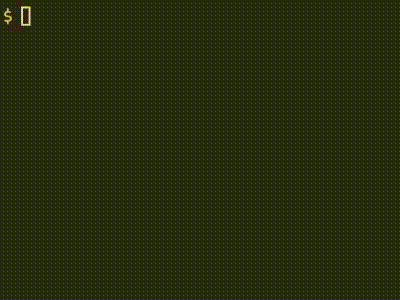

Using LaTeX Snippets in Markdown Files in Neovim
I frequently write notes in Markdown using Neovim, and many of those notes contain math. Unfortunately, all of my handy LaTeX snippets created with LuaSnip don’t work in Markdown, which makes it a pain to write anything beyond the simplest equations. In this post, I document how I got my snippets working in Markdown.
Basic Setup
The first step is to tell LuaSnip to load LaTeX snippets in Markdown files. This
saves us from having to duplicate all our LaTeX snippets. Since I use
lazy.nvim as my package manager, I just
had to tweak the config function like this:
config = function()
local ls = require("luasnip")
ls.config.set_config({
...
})
-- Make TeX snippets available in markdown
ls.filetype_extend("markdown", { "tex" })
...
end,It turns out that this is all we need to get basic snippet functionality
working. However, many of my snippets use conditional
expansion,
with snippets only expanding if the cursor is inside a math environment. For
example, typing ff automatically expands to \frac{}{} when I’m inside dollar
signs or an align environment, but it won’t expand when I type ‘affirm’ or
‘puff’ in normal text. Since a lot of my go-to snippets rely on this, that’s the
next thing I set up.
Conditional Expansion in Math Environments
When I write LaTeX files, I rely on a package called VimTex for syntax highlighting and a bunch of other useful features. One of its perks is that it can detect math environments, which we can use as a condition for snippet expansion with the following Lua function (see the article by ejmastnak for more details):
tex_utils.in_math = function()
-- This function requires the VimTeX plugin.
return vim.fn["vimtex#syntax#in_mathzone"]() == 1
endBut VimTeX is a filetype-specific plugin, so it only loads for .tex files. To
get the same functionality in Markdown, we need to create a
nvim/after/syntax/markdown.vim file with the following contents:
" From https://github.com/lervag/vimtex/issues/2395
if exists('b:current_syntax')
unlet b:current_syntax
endif
syn include @tex syntax/tex.vim
syn region markdownMath start="\\\@<!\$" end="\$" skip="\\\$" contains=@tex keepend
syn region markdownMath start="\\\@<!\$\$" end="\$\$" skip="\\\$" contains=@tex keepend
let b:current_syntax = 'markdown'This snippet first clears any existing Markdown syntax settings, then tells
Neovim to pull in LaTeX syntax rules from syntax/tex.vim (provided by VimTeX).
It defines $...$ and $$...$$ as math environments, so anything inside them
gets highlighted and treated like LaTeX math, even in a Markdown file.

Bonus for VimWiki Users
If you use VimWiki for note-taking and
also rely on the <Tab> key for snippet expansion, you’ll need to free up
<Tab> in insert mode, since VimWiki already uses it for shortcuts. I solved
this by adding the following autocommand for VimWiki:
config = function()
vim.api.nvim_create_autocmd("FileType", {
pattern = "vimwiki",
callback = function()
-- Disable <Tab> in insert mode.
vim.keymap.del("i", "<Tab>", { buffer = true })
end,
})
end,Conclusion
That’s it, we’re all set! We’re now ready to give Giles Castel
a run for his money in Markdown ;). That said, this setup is not perfect. The
biggest limitation is that it only recognizes math environments defined with
single or double dollar signs, so conditional snippets won’t work inside
environments like align. This is not a huge deal for me though, since all
serious math gets done in .tex files. If you’re curious, you can check out my
full Neovim configuration
here.